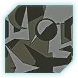

Cease Blocking My Colossus
CBMCONE OUTFIT. Infantry on point. Armour on the horizon. Air support overhead. Find your role and move as one.
Teamplay first. Alert objectives always.
FIELD ARCHIVE / AIR OPERATIONS View full image ↗ LOYALTY TO PLAY THE OBJECTIVE SUPPORT THE SQUAD FOR THE VANU
01 / THE OUTFIT
Different roles. CBMC brings infantry, vehicles, aircraft and construction together around the alert. Your contribution matters more than your preferred loadout.
OUR APPROACH Win ground. Join the squad or platoon, follow the objective and adapt as the fight changes. Build the base, bring the router, fly cover or hold the point.
Support other Vanu players who ask for help. Planned double-teaming is against our code.
Read the field code → 
OUTFIT IDENTITY Delta Camo. A shared identity across every front. The outfit’s original camo pattern.
BE PART OF THE TEAM Ask. Learn. Contribute. New to platoon play? Ask questions. Interested in leadership, building, flying or NSO support? Talk to the outfit. Ask a leader about ANVIL permissions or pulling outfit assets.
Find the outfit and ask about your first session.